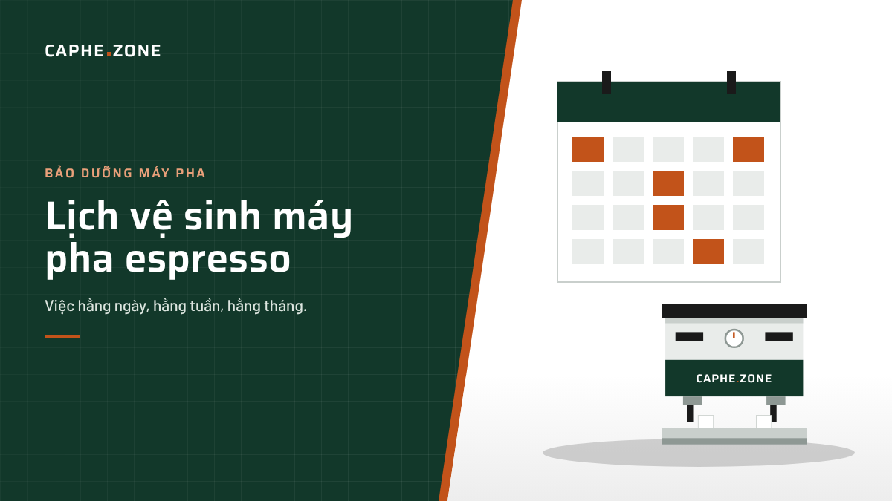
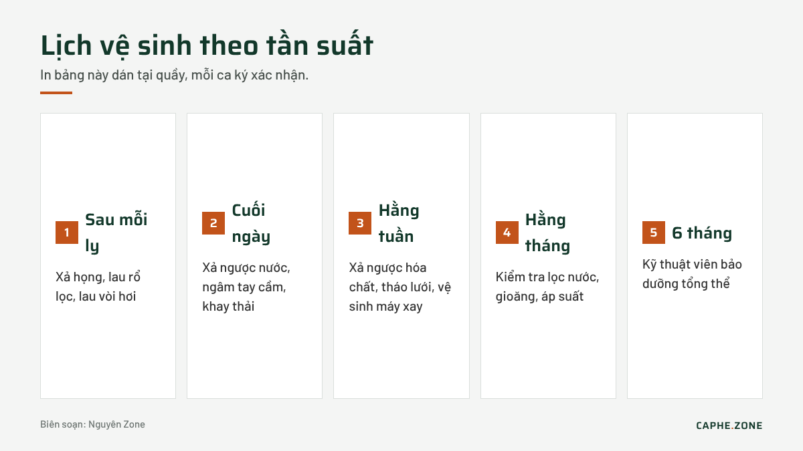

Lịch vệ sinh và bảo dưỡng máy pha espresso: việc hằng ngày, hằng tuần, hằng tháng

Trả lời nhanh: Cuối mỗi ngày cần xả ngược (backflush) họng pha bằng nước sạch, ngâm tay cầm và rổ lọc, lau vòi hơi. Mỗi tuần xả ngược bằng hóa chất chuyên dụng và tháo lưới họng pha để cọ rửa. Mỗi tháng kiểm tra lõi lọc nước và gioăng. Mỗi 6 tháng nên bảo dưỡng tổng thể: thay gioăng, kiểm tra van, bơm, áp suất và tẩy cặn nếu nước cứng.
Dầu cà phê và cặn khoáng là hai "kẻ thù" lớn nhất của máy pha espresso. Dầu bám trong họng pha làm cà phê có vị ôi, đắng khét. Cặn khoáng tích tụ trong nồi hơi làm giảm hiệu suất gia nhiệt và có thể làm hỏng điện trở. Một lịch vệ sinh rõ ràng giúp máy bền hơn và ly cà phê ổn định hơn.
Việc cần làm sau mỗi lần pha
- Xả nước họng pha 2–3 giây trước khi lắp tay cầm để làm sạch bột cũ và ổn định nhiệt.
- Gõ bã, lau sạch rổ lọc bằng khăn khô.
- Xả hơi và lau vòi đánh sữa ngay sau khi dùng, tránh sữa khô bám trong lỗ phun.
Việc cần làm cuối mỗi ca hoặc mỗi ngày
- Xả ngược bằng nước sạch: lắp rổ lọc mù (blind basket), bật bơm 10 giây, tắt 10 giây, lặp lại 5 lần cho mỗi họng.
- Ngâm tay cầm và rổ lọc: dùng nước nóng pha hóa chất vệ sinh, ngâm 15–20 phút rồi rửa sạch. Không ngâm phần tay nắm bằng nhựa hoặc gỗ.
- Vệ sinh vòi hơi: ngâm đầu vòi trong ca nước pha dung dịch tẩy sữa, sau đó xả hơi.
- Lau khay nước thải và lưới khay: tránh mùi chua và nấm mốc.
- Lau thân máy: dùng khăn mềm ẩm, không dùng chất tẩy có tính mài mòn trên bề mặt inox.
Việc cần làm hằng tuần
- Xả ngược bằng hóa chất: cho khoảng 3–5 g bột vệ sinh chuyên dụng vào rổ lọc mù, xả theo chu kỳ 10 giây bật, 10 giây tắt khoảng 5 lần. Sau đó xả lại bằng nước sạch ít nhất 5 lần.
- Tháo lưới phân phối nước (shower screen): cọ sạch dầu bám bằng bàn chải, kiểm tra lỗ lưới có bị tắc không.
- Vệ sinh máy xay: chải sạch buồng xay, dùng viên vệ sinh lưỡi xay nếu có.
Việc cần làm hằng tháng
- Kiểm tra lõi lọc nước, đo độ cứng nước bằng que thử.
- Kiểm tra gioăng họng pha: nếu phải vặn tay cầm quá sâu mới kín nước là gioăng đã chai.
- Kiểm tra đồng hồ áp suất nồi hơi và áp suất pha.
- Kiểm tra ống thoát nước thải có bị nghẹt không.
Bảo dưỡng định kỳ 6 tháng
Đây là việc nên để kỹ thuật viên thực hiện:
- Thay gioăng và lưới họng pha.
- Kiểm tra và hiệu chỉnh van giới hạn áp suất, van an toàn, van một chiều.
- Kiểm tra bơm, mô tơ, điện trở, cảm biến mức nước.
- Tẩy cặn nồi hơi nếu khu vực dùng nước cứng hoặc lõi lọc không được thay đúng hạn.

Bảng tóm tắt lịch vệ sinh
| Tần suất | Việc cần làm | Thời gian |
|---|---|---|
| Sau mỗi ly | Xả họng, lau rổ, lau vòi hơi | Vài giây |
| Cuối ngày | Xả ngược nước, ngâm tay cầm, vệ sinh vòi hơi, khay thải | 15–20 phút |
| Hằng tuần | Xả ngược hóa chất, tháo lưới, vệ sinh máy xay | 30–40 phút |
| Hằng tháng | Kiểm tra lọc nước, gioăng, áp suất | 20 phút |
| 6 tháng | Bảo dưỡng tổng thể bởi kỹ thuật viên | 1–3 giờ |
Dấu hiệu máy cần bảo dưỡng gấp
- Cà phê có vị ôi, đắng khét dù đã đổi hạt.
- Nước rò quanh tay cầm khi pha.
- Áp suất pha hoặc áp suất hơi dao động bất thường.
- Máy làm nóng lâu hơn bình thường.
- Van an toàn xì hơi liên tục.
Lưu ý khi mua máy cũ
Nếu bạn đang cân nhắc một chiếc máy pha cà phê thanh lý, hãy hỏi người bán về lịch vệ sinh và bảo dưỡng trước đó. Máy được xả ngược đều đặn và thay lõi lọc đúng hạn thường có nồi hơi sạch, ít hỏng vặt hơn hẳn máy bị bỏ bê.
Hóa chất vệ sinh nên dùng
- Bột xả ngược họng pha: chuyên làm tan dầu cà phê, dùng cho backflush hằng tuần hoặc hằng ngày ở quán đông.
- Dung dịch vệ sinh vòi hơi: làm tan protein sữa khô bám trong lỗ phun.
- Viên vệ sinh máy xay: làm sạch dầu và bột tồn trong buồng xay mà không cần tháo lưỡi.
- Chất tẩy cặn chuyên dụng: chỉ dùng khi cần, theo hướng dẫn của nhà sản xuất máy.
Luôn xả lại bằng nước sạch sau khi dùng hóa chất và không dùng chung khăn lau vòi hơi với khăn lau tay cầm.
Phân công cho nhân viên
Lịch vệ sinh chỉ hiệu quả khi có người chịu trách nhiệm. Quán nên in bảng checklist dán tại quầy, mỗi ca ký xác nhận đã làm. Người quản lý kiểm tra cuối tuần và ghi lại các bất thường như rò nước, áp suất lệch để báo kỹ thuật viên sớm. Cách làm đơn giản này giúp phát hiện hỏng hóc từ khi còn nhỏ, tránh để máy dừng giữa giờ cao điểm.
Câu hỏi thường gặp
Có thể dùng giấm để tẩy cặn máy pha không? Không nên. Giấm có thể ăn mòn linh kiện kim loại và để lại mùi. Hãy dùng sản phẩm tẩy cặn chuyên dụng theo hướng dẫn của nhà sản xuất.
Máy có van ba ngả (3-way valve) mới xả ngược được? Đúng. Máy không có van ba ngả, thường là máy gia đình giá rẻ, không nên xả ngược vì áp suất không có đường thoát.
Bao lâu thay gioăng họng pha một lần? Thông thường 6–12 tháng tùy tần suất sử dụng. Quán đông khách nên thay mỗi 6 tháng.
Kết luận
Vệ sinh đúng lịch là cách rẻ nhất để kéo dài tuổi thọ máy và giữ vị cà phê ổn định. Nếu bạn đang chọn một chiếc máy pha cà phê mới, hãy ưu tiên dòng máy dễ tháo lưới, dễ thay gioăng và có van ba ngả để việc vệ sinh hằng ngày nhẹ nhàng hơn.
Biên soạn: Nguyên Zone – Caphe.Zone.